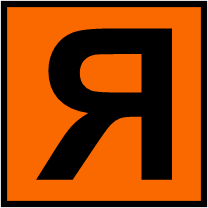
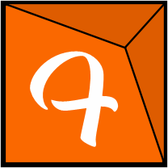

Você encontra aqui em resumo a linha do tempo sobre mim
Minha História
Meu nome é Gabriel tenho vinte e seis anos, desde pequeno tenho uma fascinação com a área da tecnologia. Quando pequeno gostava muito de jogar pelo computador, meu jogo preferido na epoca era o Counter-Strike 🔗. O motivo pela qual eu era muito viciado por esse jogo é porque conseguia fazer modificações no jogo, utlizando pequenas linhas de codigo, conseguia deixar o jogo da forma como eu quisesse .
Desenvolvedor
Nas minhas primeiras aventuras com desenvolvimento Front-End foi em 2008 quando arrisquei a criar um site. Utilizei a plataforma online Webnode. Este site ele te da a possibilidade de você criar o site com templates prontos, ou você arriscar e programar do zero. Como um bom leigo comecei fazendo de forma automatizado e com pequenos avanços comecei a programar. Meu intuito da criação do site era divulgar e facilitar o usuario a baixar meu jogo com as atualizações que tinha feito, juntamente com meu servidor do jogo.


Arte-Finalista
Em 2020 tivemos um surto de pandemia na qual tivemos muitas perdas. Com esta pandemia conseguimos aprender que a tecnologia é muito mais que essencial e podemos fazer muitas coisas alem do que imaginavamos. No final de 2020 tive uma oportunidade de emprego na qual me pegou de surpresa, uma empresa me ligou perguntando se eu queria uma oportunidade de trabalhar em um uma grafica como arte-finalista, fiquei surpreso por me chamarem pois não tinha experiencia com designer e operações graficas, e estou la desde então. Pude aprender muito com as ferramentas graficas e digitais, como; CorelDraw, Photoshop e Adobe Illustrator.